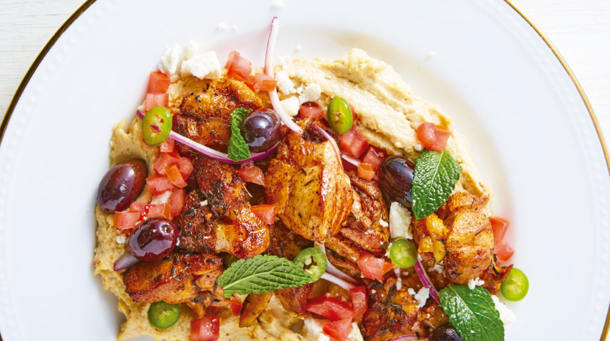

Resetas de Comida
Receta
 ¡SALUDABLE Y DELICIOSO!
TE COMPARTIMOS UNA RECETA DE
PECHUGA DE POLLO ASADA SOBRE HUMMUS
QUE TE VA A CONQUISTAR.

⮞INGREDIENTES
🢃
🔴Hummus
🔴2 pechugas de pollo en cubos grande
🔴2 c chiles serranos en rodajas
🔴½ cebolla morada en julianas
🔴2 jitomates picados
🔴1 c aceitunas calamata
🔴c ½ hojas de menta
🔴c ½ queso feta
🔴1 tbsp. paprika
🔴1 tbsp. tomillo seco
🔴4 tbsp. aceite de oliva
⮞INSTRUCCIONES
🢃
🔴Mezcla con aceite de oliva.
🔴Mezclar jitomate, aceituna, cebolla y chile.
🔴En una sartén caliente
🔴fríe la pechuga con paprika, tomillo, salpimienta.
🔴Unta humus en un plato,
🔴agrega pollo y un poco de la ensalada.
🔴Termina con hojas de menta y queso feta.
TIEMPO DE PREPARACIÓN:
15m
TIEMPO DE COCCIÓN:
15m
TIEMPO:
30m
COCINA:
Mexicana
PORCIONES:
4 porciones
Esta pechuga de pollo asada sobre hummus
te va a encantar por muchas razones
es saludable, deliciosa,
¡y además muyrápida y fácil de preparar!
Aprende a preparar esta receta que te va a conquistar.
PECHUGA DE POLLO ASADA TIPS PARA PREPARARLAS
Llegó la hora de preparar esta rica receta
Pero para que te quede con el sabor de un restaurante 5 estrellas
te compartimos estos tips
¡Toma nota y aplícalos al momento de cocinar!
Asa las pechugas alrededor del exterior de tu asador para evitar que se cocine de más
Esta técnica se llama “fuego indirecto”
La temperatura que te recomendamos es de 75° C
Deja marinar las pechugas en el refrigerador durante toda la noche
para que puedan obtener el mejor sabor y que el pollo no se sequen en el asador
Para un marinado fácil y práctico,
haz una mezcla de aceite de oliva con orégano y jugo de limón;
integra las pechugas con todo y piel y déjalas reposar
Para obtener una piel muy dorada,
espolvorea un poco de azúcar un poco antes de que vayas a quitarlo del fuego
Eso provocará que se caramelice ligeramente y se verán mucho más antojables cuando las lleves a la mesa.
Mis Sitios